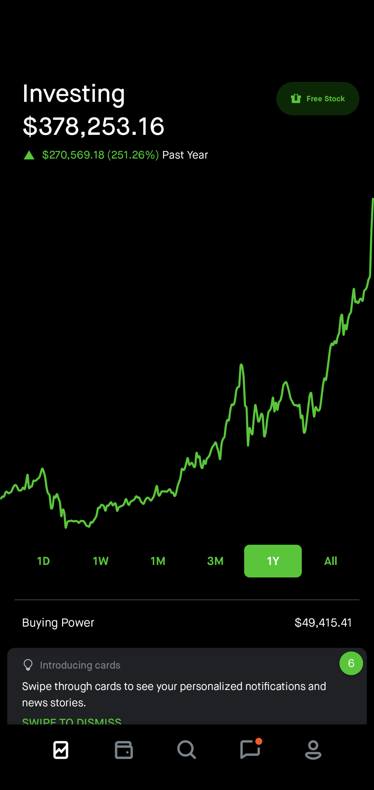

January 08, 2021
Hello amigos! This is the second in the series of investment blogs for 2020 following the one written in January. I had originally meant to have had this one completed prior to the new year, but I was having a bit too much fun traveling the coast of the Yucatan Peninsula. Now, I’m sitting on my hostel bed in San Miguel, and despite it being a Saturday night, there is little going on to distract me. I figured now is a good time to be productive.
My hope for this blog is to reflect upon and share what I’ve learned the past year in terms of the mistakes I’ve made, the things that went well, and some useful tips and important investing concepts for anyone wishing to get started. I figured this past year has been significant for me because it’s the first year where I took investing seriously, and also because there were many mistakes that I was able to reflect upon resulting from the covid-19 March market crash.
I’ve divided this blog into three sections, the first covering my reflections and advice to begineers, the second being more concept based, and the third is an evaluation on my 2020 progress. Also, note that my takeaways are simply my personal perspective, so yours might be different. Without further ado, let’s dive into it!
Section 1 - Reflection and Advice to Begineers Don't Day TradeOne thing that I’ve noticed amongst people who’re new to investing is that they share a commonality of being day traders. For those who aren’t familiar with the term, day trading is defined as buying and selling the same stock within a trading day. I remember I did this myself when I first started in 2015, but I learned that it’s difficult to turn a profit consistently. The only way to do so is to time the market perfectly, but that’s impossible since it’s unpredictable and irrational. Of course, there are professionals out there who’ve had success, but I feel like if you aren’t one, then you’re relying on luck.
Besides the luck factor, there are a few other reasons I advise learning away from being day trading. The first is that there’s actually a limit on how many trades of the same stock that can be executed within a given week. For Robinhood, the stockbroker that I use, you can only place five trades of the same stock in a given week. Anything past that and you get flagged as a pattern day trader. The only exception to this rule is if you have over 20k in your investment account, not including margins.
Second, you’re competing against AI powered day-trading bots that can execute trades much faster than you can.
Lastly, day trading requires a lot of time, attention, and can become stressful since it involves lot of second-guessing yourself. You’ll constantly have to monitor stock prices, which is distracting and takes time away from other more meaningful activities.
What I would recommend doing instead is to buy stocks that you think will do well long-term, and just hold on to those stocks. Another benefit that you’ll get out of this is that you’ll have to pay less in taxes since you’ll be paying long-term capital gains tax instead of short-term (see tax section).
Don’t Time the MarketEconomics is not a science and therefore, it’s impossible to predict the market. I remember during the March covid crash, I sold all my positions because I didn’t see the market improving anytime soon. My plan was to wait until the market worsened and then buy everything back at a lower price (the other reason for selling was because I was nearing my margin maintenance level). After selling, I’d check the news and read blog posts every day to find a good time to reenter the market. Not only was this stressful, but it was meaningless in retrospect because not even the professionals knew what was going on then.
I eventually bought all of my stocks back, some at a lower price, and some at a higher price. Based off my calculations, I took a 20k lose by selling and rebuying vs if I had never sold. Of course, 20k is a costly mistake, but more so is the opportunity cost of that lose since it would’ve compounded (see section on compound interest) to about 60k given my end of year 190% percentage return. That was the cost of trying to time the market and failing to do so.
Don’t Trade Based on EmotionsI can say with confidence that I’ve never done well trading based off emotions. During the start of the March market crash, I had intended to ride it out given my long-term trading strategy. However, as the crash progressed, I felt increasingly concerned since, at that point, I was already down about 50k from my all-time high. I eventually sold all my positions due to panic, which deterred me from my original plan of holding. Although, there were other factors unrelated to emotions that motivated me to sell (as described in the previous section), it nevertheless played a factor.
For this experience, I’ve learned that the best long-term strategy during a crash is to be patient and hold. This assumes that you have a portfolio that you’re confident in long-term, and also that you’ll not financially depended on your stocks. If your strategy is short-term, then perhaps you can just sell as soon as possible but this’s obviously easier said than done. Also, in the event of a market crash, I found it helpful not checking your account until the crash is over. It might be weeks or month, but it’ll alleviate stress. The only exception is if you’re trading using margins, in which case you’ll have to monitor your account to make sure you don’t fall below your maintenance amount.
In general, market corrections are purely natural, as well as bear markets and bull markets. Just look at this stat: “There have been 25 bear markets in the S&P 500 Index since 1928. However, there have also been 26 bull markets—and stocks have risen over the long term.” Bear markets can be painful, but overall, markets are positive a majority of the time. The important thing is to be patient and not to panic sell. This is a good quote from Buffett: “The stock market is a device for transferring money from the impatient to the patient.”
Another example of trading on emotions is feeling a sense of FOMO after selling a stock and seeing the price rise, or wanting to buy a stock that spiked in price. For the first, you might regret selling and have a strong urge to buy that stock back at the higher price. However, never do this because chances are that you’ve already missed your opportunity. If you do want to buy it back, just wait until there’s a price drop. The same goes for the second example. Again, just wait until the next price drop to buy it. Of course, you won’t have to worry about all this if you have a long-term strategy.
My Though About MarginsFor those who aren’t familiar with margins, all that it is, is trading with borrowed money from your stockbroker. Typically, the amount that you have available to borrow depends on how much money you have in your account. Of course, you’ll have to pay monthly interest on the amount borrowed.
Since using margins gives you more to trade with, both your gains and losses will be magnified.
The downside with margins is that it’s riskier. If your stocks aren’t doing well, then you’re losing money that isn’t yours. It’s also worth mentioning that there’s something called the margin maintenance level, which is the amount that your account value (without margins) needs to be above or else you’ll be forced to either deposit funds into your account or sell stocks to reach the maintenance level.
The reason I use margins is because I don’t mind the added risk. I don’t have any financial obligations such as loans, a family to support, nor am I dependent on the money in my portfolio. Thus, a lose won’t impact my lifestyle. However, if any of those do apply to you, then I’d suggest not using a margin account. Furthermore, the other reason is because I’m confident that the market will generally perform well in the long term, and since my strategy is long-term, that’s something that makes sense for me.
One thing about margins is that it can get expensive depending on how much you borrow. Prior to 2021, Robinhood charges 5% annually on the amount borrowed, and since I currently have about 300k borrowed, that amounts to 15k yearly, or 1.25k monthly that I have to pay. Luckily, starting this year, Robinhood cut the rate to 2.5%.
Moving forward, I’ll be transferring my stocks to another broker called Interactive Broker, which one of my friends recommended to me recently. Interactive Broker only charges 1.5% for margins instead of Robinhood’s 2.5%. Even though that’s only a 1% difference, it amounts of 3k saved annually. If you don’t plan on borrowing much in margins, I’d say stick with Robinhood because the UI is clean and easy to understand.
Section 2 - Concepts to Understand Understand TaxesTaxes for capital gains/lose can get complicated so I recommend doing research online to get more information, but if choose not to, it’s important to know this:
If you buy a stock and don’t sell for a year or longer, you’ll be taxed a long-term capital gains tax, which is 15% of the profit you made vs. long-term capital gains tax, which is whatever your tax bracket is. This only applies if you sell your stock and make a profit.
Understanding this is important because let’s say you made 100k profit short term by selling your stocks and cashing out, then when tax season comes, you’ll be expected to pay a hefty sum. It won’t be good if you owe money to the IRS and don’t have it.
Understand Compound Interest and the Rule of 72“Compound interest is the 8th wonder of the world. He who understands it, earns it; he who doesn’t, pays it.” – Albert Einstein
As a good friend of mine explained to me, our brain is wired for linear thinking as a result of evolution. Exponential thinking is hard to fathom. That’s why understanding the concept of compounding may not come easy. It certainly wasn’t for me.
Remember those Instagram ads that you see that says that if you put x amount a month towards your retirement account, you’ll have multiple millions once you reach a certain age? That’s pretty much the idea behind compound interesting. For example, let’s say you invest 1k today, and your stock goes up 1%. Now, your account value is 1.1k, and if it goes up 1% the next day, that’s 1% of 1.1k, not 1k.
In Finance, there’s a rule called Rule of 72 that is used to estimate compounding periods and is a sample way to determine how long an investment will take to double given a fixed annual rate of return. E.g., if you invest 1k, and assuming you have an annual return of 100%, then it’ll take 72/100 = 0.72 years for your money to double to 2k.
Even if you decide not to invest, these are important concepts for you to know because compounding also applies to credit card debt and loans. It can work against you as much as it can help you.
Section 3 - My 2020 EvaluationMy return for 2020:
Note: I screenshotted this at the time of writing 01/08 but the amount for 12/31 was 190.4k
I’m a very goal driven person, and I remember during the beginning of the year, I set myself a goal to pass a certain threshold. Once I passed that, I set myself another goal, which I also passed. Eventually, I lost interest in financial goals because I’ve come to realize that I have personal and career goals that’s more important to me at this point in my life. To a certain extent, what I’ve made the past year doesn’t have meaning besides being big numbers on a screen; it’s not tangible. I feel like this is especially true since I don’t have any big purchases in the near future. In the meanwhile, I will continue putting money into my account and living frugally.
In case you were wondering, my portfolio consists of Amazon, Apple, AMD, Chipotle, Tesla, Square, Plug Power, Hubspot, Spotify, Shop, and NIO.
I hope this was helpful for you, and if you have any questions on getting started, feel free to reach out to me!